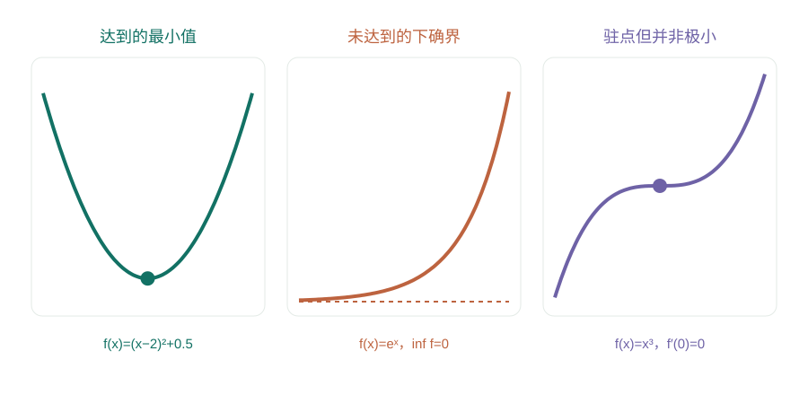

什么才算优化问题的解？
最小点、目标最小值、下确界与驻点不是同一个概念。只有把存在性、必要条件与充分条件分开，才能判断一次算法返回的数字究竟意味着什么。
目标值与决策点是两件事
考虑无约束最小化 minₓ f(x)，定义域通常为实数空间。最优点 x* 是达到最低函数值的决策；最优值 f* 是该点的函数值。不同最优点可能得到相同最优值，而且有些问题压根没有任何能达到最低值的点。
局部最优只要求在某个邻域里没有更小值；全局最优则必须和整个可行域的所有点比较。数值算法通常先求一个可检查的近似候选，再通过定理或界证明其最优性。
三个看起来相似、结论却不同的图

能取到：f(x)=(x−2)²+0.5 对所有实数 x 都至少为 0.5，且在 x=2 达到它。故最优点 x*=2，最优值 f*=0.5。
只有下确界：f(x)=eˣ 对任意有限 x 都大于零，但当 x→−∞ 时趋近零。因而 infₓ eˣ=0，却不存在最优点 x*。写“最小值为 0”不严谨，应该说“下确界为 0”。
驻点非极小：f(x)=x³ 在 x=0 时导数为零，但左边的函数值更小、右边更大，因此零点不是局部极小点。
一阶必要条件不是充分条件
若 f 在内点 x* 可微，x* 是局部极小点，则梯度为零。这是一阶必要条件；它不保证 x* 真是极小点，更不保证全局最优。
对一元二次可微函数，若 f'(x*)=0 且 f''(x*)>0，则 x* 是严格局部极小点。如果 f''(x*)<0 则是严格局部极大点；如果 f''(x*)=0，二阶检验无法直接定论。多维对应 Hessian 的正定性判断，但严格局部最小也可能出现在 Hessian 不正定的边界情况。
解何时存在
存在性与最优性是不同问题。若 f 在非空紧集（例如闭且有界的实数域可行集合）上连续，Weierstrass 极值定理保证至少存在一个最小点。无约束实数空间不是紧集，不能直接套用这一结论。
在整个实数空间上，如果 f 连续且强制性增长，即当 ||x||→∞ 时 f(x)→∞，也能保证最小点存在。这个条件是充分条件，不是必要条件；非强制性增长的函数也可能有最小点。
“求解器停止了”不等于“数学上存在一个全局最小点”。必须先确认求解目标有意义，再解释停止原因。
一个数值答案需要哪些检查
- 可行性：无约束问题没有额外约束，但仍需在定义域内且函数有定义。
- 一阶残差：检查 ||∇f(x)|| 是否足够小；这通常只是驻点证据。
- 曲率信息：用 Hessian、方向导数或邻域比较排查鞍点和局部极大点。
- 全局证明：若目标凸，局部最优可升格为全局最优；若有下界证书，还需核对上下界差。
实际计算会遇到有限精度、数据噪声和停止容差。因此通常报告“近似最优点、目标值、残差和停止理由”，而不是只给一个没有上下文的 x。
检查一个二次函数候选点
移动 x，观察 f(x)=(x−2)²+0.5 的目标值、导数和与真实最优点的距离。只有 x=2 同时达到解析最小值和零梯度。
实时计算
当前函数在整个实数域严格凸并且能取到最小值。
Python：三个相互独立的判断
程序同时检查：二次函数的可达到最小值、三次函数的零导数反例、指数函数始终为正却可以无限逼近零。这三件事不能互相替代。
"""Separate an attained minimum, a stationary non-minimum, and an infimum."""
from math import exp, isclose
def quadratic(x: float) -> float:
return (x - 2.0) ** 2 + 0.5
def quadratic_gradient(x: float) -> float:
return 2.0 * (x - 2.0)
def cubic(x: float) -> float:
return x ** 3
def cubic_gradient(x: float) -> float:
return 3.0 * x ** 2
if __name__ == "__main__":
minimizer = 2.0
print("quadratic minimizer:", minimizer, "minimum value:", quadratic(minimizer))
print("cubic stationary derivative at zero:", cubic_gradient(0.0))
print("exp(-1), exp(-5), exp(-10):", exp(-1), exp(-5), exp(-10))
assert isclose(quadratic(minimizer), 0.5)
for x in (-3.0, 0.0, 1.0, 2.0, 3.5):
assert quadratic(x) >= quadratic(minimizer)
assert isclose(quadratic_gradient(minimizer), 0.0)
assert isclose(cubic_gradient(0.0), 0.0)
assert cubic(-0.1) < cubic(0.0) < cubic(0.1)
assert exp(-10) < exp(-5) < exp(-1)
assert exp(-10) > 0.0
练习：令 f(x)=x⁴。它在 x=0 时一阶、二阶导数都为零，但 f(x)≥0 且只有在 x=0 取零，因此 x=0 仍是严格全局最小点。此例说明二阶导数等于零时需要其他论证。